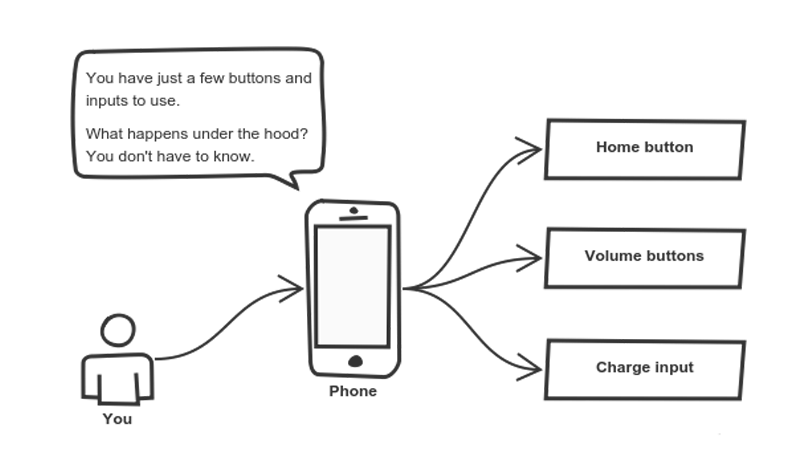

Classes#
OOP#
Encapsulation
Inheritance
Polymorphism
Abstraction (optional)
Encapsulation#
Abstraction#
Inheritance#

Polymorphism#

Type → Class → Object#
Type— a descriptive set of values and operations on themClass— implementation of a typeObject— instance of a class
Examples of types, classes and objects#
“Логический тип” → bool → True, False
“Целочисленный тип” → int → 1, 2, 3
“Строковый тип” → str → “hello”, “world”.
“Множество” → set → {1, 2, 3}, {4, 5, 6}
“Упорядоченный набор фиксированной длины” → tuple → (1, 2, 3), (3, 4)
“Питоновский класс” → type → int, str, float
Classes in Python#
class A:
X = 10 # class variable
def __init__(self, x: int): # init a new instance of the class
self._x = x # self refers to this instance
def foo(self) -> None: # class method
self._x += 1 # update the self instance variable
@staticmethod # static method of the class
def bar() -> str: # self is not passed to it!
return "bar"
@classmethod # class method of the class
def baz(cls: type) -> str: # pass cls instead of self!
return cls.__name__
@property # property-method
def x(self) -> int:
return self._x
@x.setter # setter-property method
def x(self, x: int) -> None:
self_x = x
Objects → Instancing#
Create a class → Construct an instance → Initialize the instance
class A:
"""My class A"""
def __init__(self):
print(f"Called init, {self}")
def foo(self):
print(f"Called foo, {self}")
a = A(); b = A()
Called init, <__main__.A object at 0x10888e920>
Called init, <__main__.A object at 0x10888e9b0>
Methods vs attributes#
# class method
a.foo()
Called foo, <__main__.A object at 0x10888e920>
import numpy as np
arr = np.random.rand(3, 4)
# class attribute
print(arr.shape)
# class method
print(arr.mean())
(3, 4)
0.5360427832241017
Classes → @staticmethod#
class A:
@staticmethod
def foo() -> int:
return 1
a = A(); b = A()
a.foo(), b.foo()
(1, 1)
Classes → @staticmethod → init alt#
import os
class A:
def __init__(self, folder: str, file_name: str):
self.folder = folder
self.file_name = file_name
@staticmethod
def from_path(path: str) -> 'A':
folder, file_name = path.rsplit("/", 1)
return A(folder, file_name)
@staticmethod
def from_folder(folder: str)-> list['A']:
return [A(folder, filename) for filename in os.listdir(folder)]
a = A("/home/phil", "lecture5.ipynb")
b = A.from_path("/home/ilariia/lecture5.ipynb")
cs = A.from_folder("./")
a.__dict__
{'folder': '/home/phil', 'file_name': 'lecture5.ipynb'}
b.__dict__
{'folder': '/home/ilariia', 'file_name': 'lecture5.ipynb'}
for c in cs:
print(c.__dict__)
{'folder': './', 'file_name': 'iterate_me.ipynb'}
{'folder': './', 'file_name': 'Spaghetti.png'}
{'folder': './', 'file_name': '.DS_Store'}
{'folder': './', 'file_name': 'BasicTypes.ipynb'}
{'folder': './', 'file_name': 'images'}
{'folder': './', 'file_name': 'handbook.ipynb'}
{'folder': './', 'file_name': 'exceptions.ipynb'}
{'folder': './', 'file_name': 'Sequence.png'}
{'folder': './', 'file_name': 'ControlFlow.ipynb'}
{'folder': './', 'file_name': 'NumpyAndPandas.ipynb'}
{'folder': './', 'file_name': 'FunctionsStrings.ipynb'}
{'folder': './', 'file_name': 'R_test.ipynb'}
{'folder': './', 'file_name': 'branch.png'}
{'folder': './', 'file_name': 'complete_guide.ipynb'}
{'folder': './', 'file_name': '.mypy_cache'}
{'folder': './', 'file_name': 'Classes.ipynb'}
{'folder': './', 'file_name': 'titanic.csv'}
{'folder': './', 'file_name': 'Variables.ipynb'}
{'folder': './', 'file_name': '.ipynb_checkpoints'}
{'folder': './', 'file_name': 'loop.png'}
{'folder': './', 'file_name': 'NP_tasks.ipynb'}
Classes → public/private labels#
class A:
def __init__(self):
self.x: int = 1 # public
self._x: int = 2 # private
self.__x: int = 3 # super private
def foo(self) -> str: # public
return "foo"
def _foo(self) -> str: # private
return "_foo"
def __foo(self) -> str: # super private
return "__foo"
a = A()
print(a.x)
print(a._x)
print(a._A__x)
print(a.foo())
print(a._foo())
print(a._A__foo())
1
2
3
foo
_foo
__foo
Classes → Dunder methods#
class A:
def __init__(self, x: int): # dunder means 'double underscore'
self.x = x
Classes → Dunder methods → __str__/__repr__#
class A:
def __init__(self, x: int):
self.x = x
a = A(6)
print(a)
a
<__main__.A object at 0x10b9f7d30>
<__main__.A at 0x10b9f7d30>
class A:
def __init__(self, x: int):
self.x = x
def __str__(self) -> str: # what for?
return f"A with attr {self.x}"
def __repr__(self) -> str:
return f"A({self.x})"
a = A(6)
print(a)
a
A with attr 6
A(6)
str(a), repr(a)
('A with attr 6', 'A(6)')
Classes → Dunder methods → arithmetics#
class A:
def __init__(self, x: int):
self.x = x
def __add__(self, other: 'A') -> 'A':
return A(self.x + other.x)
def __iadd__(self, other: 'A') -> 'A':
self.x += other.x # be aware of the semantics
return self
a = A(6)
b = A(4)
id_A = id(a)
a += b
print(a.x)
print(id(a) == id_A)
a = a + b
print(id(a) == id_A)
a.x
10
True
False
14
Classes → Dunder methods → __call__#
from math import factorial, sqrt
class Power:
def __init__(self, p: float):
self.p = p
def __call__(self, a: float) -> float:
return a**self.p
power = Power(3)
power(4)
64
Classes → Dunder methods → __len__#
class PythonDudes:
def __init__(self, names: list[str]):
self.names = names
def __len__(self) -> int:
return len(self.names)
def add(self, name: str) -> None:
return self.names.append(name)
catalog = PythonDudes(["ilariia", "alex", "vadim", "nikita"])
catalog.add("kostya")
len(catalog)
5
Classes → Dunder methods → __eq__#
class A:
def __init__(self, x: int):
self.x = x
def __eq__(self, other: 'A') -> bool:
return self.x == other.x
# def __ne__(self, other: 'A') -> bool:
# return self.x != other.x
# a1 = A(3)
A(3) == A(3), A(3) != A(5), A(3) != A(3),
# https://docs.python.org/3/reference/datamodel.html#object.__lt__
# https://stackoverflow.com/questions/4352244/should-ne-be-implemented-as-the-negation-of-eq
(True, True, False)
Classes → Dunder methods → __lt__/__gt__#
class A:
def __init__(self, x: int):
self.x = x
def __lt__(self, other: 'A') -> bool:
print(self.x)
return self.x < other.x
def __gt__(self, other: 'A') -> bool:
print(self.x)
return self.x > other.x
A(5) < A(3), A(5) > A(3)
5
5
(False, True)
Classes → Dunder methods → __le__/__ge__#
class A:
def __init__(self, x: int):
self.x = x
def __le__(self, other: 'A') -> bool:
print(self.x)
return self.x < other.x
A(5) <= A(3), A(5) >= A(3)
5
3
(False, True)
Classes → Inheritance#
class A:
def __init__(self, x: str):
self.x = x
class B(A):
pass
b = B("hello")
print(b.x)
hello
Classes → Inheritance → Overriding#
class A:
def __init__(self, x: str):
self.x = x
class B(A):
def __init__(self, y: str):
self.y = y
b = B("hello")
print(b.y)
print(b.x)
hello
---------------------------------------------------------------------------
AttributeError Traceback (most recent call last)
Input In [34], in <cell line: 11>()
9 b = B("hello")
10 print(b.y)
---> 11 print(b.x)
AttributeError: 'B' object has no attribute 'x'
Classes → Inheritance → Using parent method in override#
class A:
def __init__(self, x: str):
self.x = x
class B(A):
def __init__(self, x: str, y: str):
A.__init__(self, x)
self.y = y
b = B("xxx", "yyy")
print(b.x, b.y)
xxx yyy
Bank account example#
class BankAccount:
'''
BankAccount represents the bank account, with methods to deposit and withdraw money from it
'''
def __init__(self, balance = 0):
assert balance >= 0, "balance has to be non-negative."
self._balance = balance
def deposit(self, amount):
'''
Add the deposit amount to the account balance.
Deposit amount has to be non-negative.
No return value.
'''
if amount < 0:
print("Deposit fail: deposit amount has to be non-negative.")
return 0
else:
self._balance += amount
return amount
def withdraw(self, amount):
'''
Deduct the withdraw amount from the account balance.
Withdraw amount has to be non-negative and not greater than the balance.
Return the value of the withdrawn amount
'''
if amount < 0:
print("Withdraw fail: withdraw amount has to be non-negative.")
return 0
elif self._balance >= amount:
self._balance -= amount
return amount
else:
print("Withdraw fail: withdraw amount is more than the balance.")
return 0
def get_balance(self):
'''
Return current balance
'''
return self._balance
my_account = BankAccount(1000)
my_account.deposit(500)
my_account.get_balance()
1500
money = my_account.withdraw(200)
print(money)
200
my_account.get_balance()
1300
class OverdraftAccount(BankAccount):
'''
OverdraftAccount represents a bank account with overdraft limit
'''
def __init__(self, balance, overdraft_limit):
assert overdraft_limit > 0, "overdraft limit has to be non-negative."
assert balance > -overdraft_limit, "balance exceeds overdraft limit"
self._balance = balance
self._overdraft_limit = overdraft_limit
def withdraw(self, amount):
'''
Deduct the withdraw amount from the account balance.
Withdraw amount has to be non-negative and not greater than the balance with overdraft limit.
Return the value of the withdrawn amount
'''
if amount < 0:
print("Withdraw fail: withdraw amount has to be non-negative.")
return 0
elif self._balance + self._overdraft_limit >= amount:
self._balance -= amount
return amount
else:
print("Withdraw fail: overdraft limit does not allow this withdrawal")
return 0
def get_overdraft_limit(self):
'''
Return the overdraft limit
'''
return self._overdraft_limit
over_account = OverdraftAccount(1000, 100)
over_account.withdraw(1500)
Withdraw fail: overdraft limit does not allow this withdrawal
0
over_account.withdraw(1050)
1050
over_account.get_balance()
-50
from math import gcd
class Fraction:
def __init__(self, *args):
if len(args) == 2:
self._num, self._denom = args[0], args[1]
elif len(args) == 1:
lst = args[0].split('/')
self._num = int(lst[0])
self._denom = int(lst[1])
else:
raise ValueError("Invalid input")
self._normalize()
def _normalize(self):
common_factor = gcd(self._num, self._denom)
self._num = self._num // common_factor
self._denom = self._denom // common_factor
def numerator(self, *args):
if len(args) == 0:
return self._num
elif len(args) == 1:
self._num = args[0]
self._normalize()
else:
raise ValueError("Too much arguments")
def denominator(self, *args):
if len(args) == 0:
return self._denom
elif len(args) == 1:
self._denom = args[0]
self._normalize()
else:
raise ValueError("Too much arguments")
def __str__(self):
result = str(abs(self._num)) + "/" + str(abs(self._denom))
if self._num * self._denom < 0:
result = "-" + result
return result
def __repr__(self):
return f"Fraction('{self.__str__()}')"
def __neg__(self):
return Fraction(-self._num, self._denom)
from random import randint
for i in range(100):
numerator = randint(-20, 20)
denominator = randint(-20, 20)
if denominator != 0:
print(numerator, denominator, Fraction(numerator, denominator))
1 8 1/8
1 9 1/9
-18 4 -9/2
6 12 1/2
6 19 6/19
-1 -2 1/2
-19 17 -19/17
0 15 0/1
12 17 12/17
9 -13 -9/13
19 15 19/15
2 11 2/11
-10 12 -5/6
-18 9 -2/1
-4 12 -1/3
17 12 17/12
0 9 0/1
-10 -14 5/7
-10 17 -10/17
-9 -18 1/2
-13 8 -13/8
-3 3 -1/1
-11 9 -11/9
-11 18 -11/18
18 -14 -9/7
13 -4 -13/4
12 3 4/1
-3 -13 3/13
-10 -12 5/6
-11 19 -11/19
-2 -2 1/1
14 -7 -2/1
-19 6 -19/6
18 -4 -9/2
15 -20 -3/4
0 3 0/1
-13 19 -13/19
15 -15 -1/1
-11 -8 11/8
-3 11 -3/11
5 -8 -5/8
18 15 6/5
-20 10 -2/1
8 -15 -8/15
19 13 19/13
5 13 5/13
-20 -12 5/3
10 -3 -10/3
14 -19 -14/19
-8 -14 4/7
9 9 1/1
6 12 1/2
1 17 1/17
-8 2 -4/1
-11 -13 11/13
-20 -6 10/3
0 -19 0/1
0 -10 0/1
6 18 1/3
-20 2 -10/1
-16 15 -16/15
-12 -7 12/7
-4 -16 1/4
-4 -17 4/17
-4 5 -4/5
-12 10 -6/5
9 17 9/17
-13 6 -13/6
16 11 16/11
1 11 1/11
9 13 9/13
18 14 9/7
13 9 13/9
-3 -16 3/16
7 12 7/12
1 1 1/1
-7 -20 7/20
-18 17 -18/17
2 7 2/7
13 -19 -13/19
-17 -4 17/4
9 3 3/1
-18 15 -6/5
-14 -4 7/2
15 2 15/2
-1 9 -1/9
-16 -18 8/9
-7 -7 1/1
-9 -18 1/2
-16 -9 16/9
-15 10 -3/2
-17 18 -17/18
15 17 15/17
-11 -5 11/5
-3 -12 1/4
17 17 1/1
5 -1 -5/1
-3 -17 3/17
gcd(-10, -21)
1
f.numerator(35)
f, id(f)
(Fraction('-35/4'), 4481953280)
f1 = -f
f, f1, id(f1)
(Fraction('-35/4'), Fraction('35/4'), 4481953568)